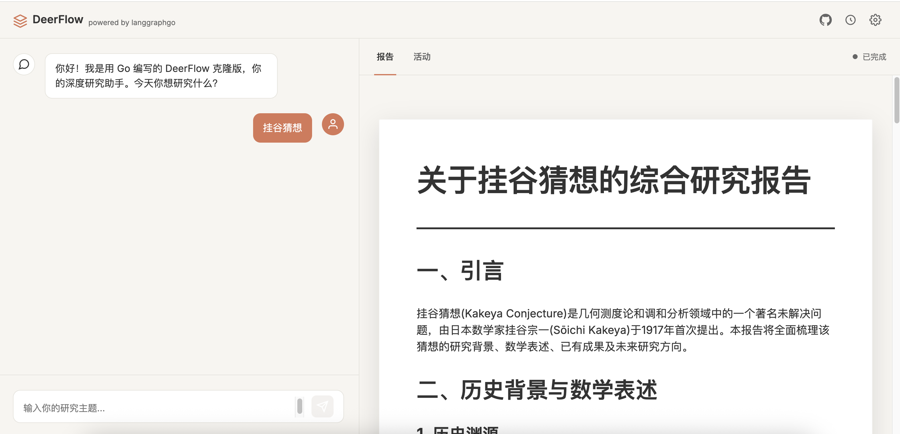

案例
使用 LangGraphGo 构建的真实应用。

多 Agent 协作
Open Deep Research
langchain-ai/open_deep_research 的 Go 语言实现。这是一个分层多智能体系统，由 Supervisor 智能体协调多个并行 Researcher
智能体，对复杂问题进行全面研究。
特性： 并行执行、Tavily 搜索集成、研究压缩、可配置模型。
cd showcases/open_deep_research
export OPENAI_API_KEY="..."
export TAVILY_API_KEY="..."
go run *.go "你的研究问题"
工具使用
DeepAgents
一个具备文件系统访问权限和子智能体委派能力的智能体示例。展示了如何让 Agent 使用工具进行文件读写、管理待办事项列表以及处理复杂任务。
cd showcases/deepagents
export OPENAI_API_KEY="..."
go run main.go